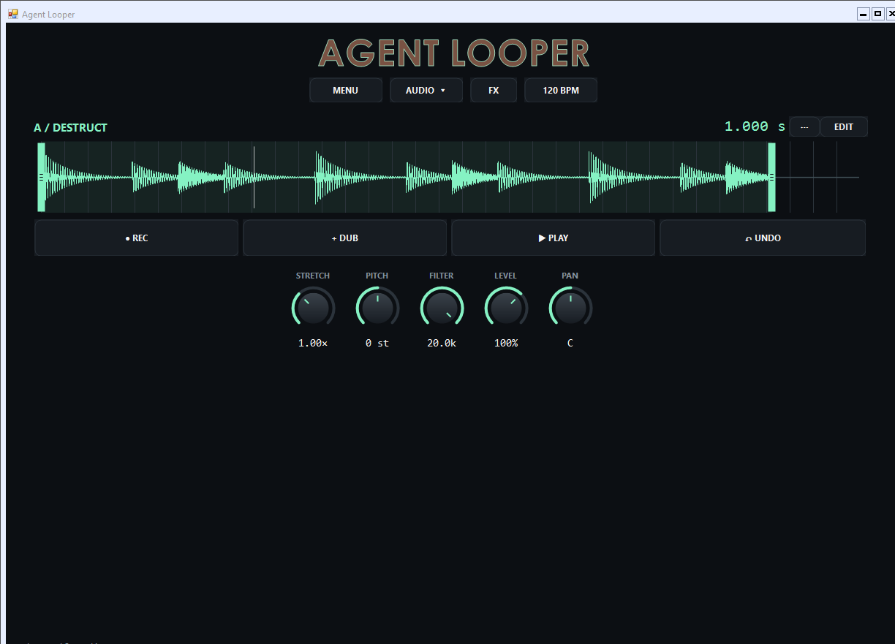

Download
Download for Windows
Start looping
- Extract the complete ZIP. Keep the DLLs, tools and license files next to the program.
- Run Agent-Looper.exe.
- Choose your input channels and an output in AUDIO. ASIO drivers are supported.
- REC starts and finishes a take, DUB adds another pass, and PLAY stops or restarts playback.
New sessions start in Single + Destructive mode, like a hardware pedal. MENU → Layout turns on the second looper.
What it does
- Seamless overdubbing with Undo and Redo, input-triggered recording, quantized starts, optional count-in and click.
- Edit loop regions with waveform handles and scroll-wheel zoom. Change pitch, stretch and filter during playback.
- Separate A/B sends with shared effect settings: Hall and Room reverb, Delay, Ping-Pong and POTS delays, Granular, Clouds and Cloud Delay, independent A/B Freeze, and independent lowpass/highpass filters for A and B.
- MIDI-assignable transports and knobs.
- Import audio up to ten minutes, including MP3 and the audio from supported video files. Export 48 kHz stereo 32-bit float WAV.
- Press F11 for fullscreen.